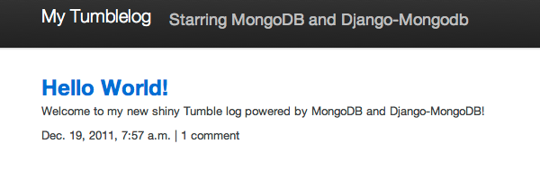
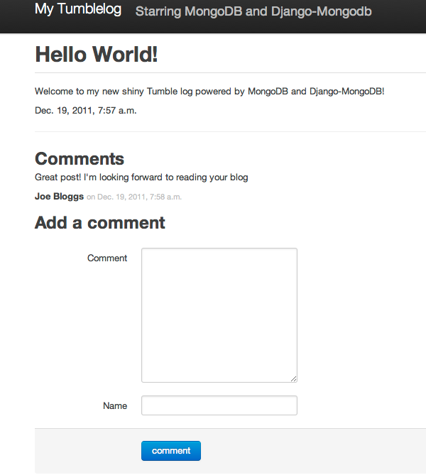
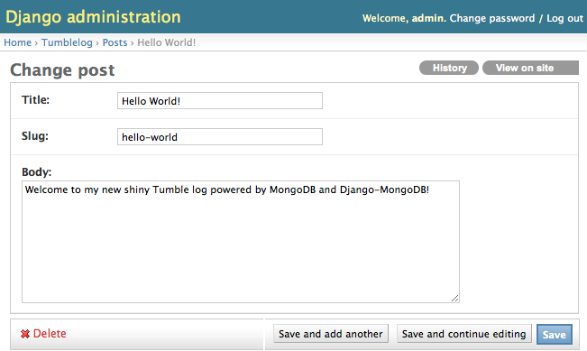
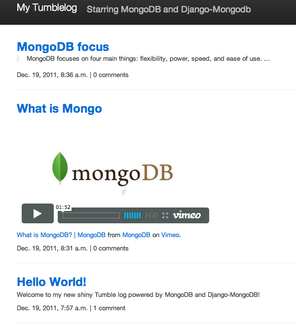

In this tutorial, you will learn how to create a basic tumblelog application using the popular Django Python web-framework and the MongoDB database.
The tumblelog will consist of two parts:
This tutorial assumes that you are already familiar with Django and have a basic familiarity with MongoDB operation and have installed MongoDB.
Where to get help
If you’re having trouble going through this tutorial, please post a message to mongodb-user or join the IRC chat in #mongodb on irc.freenode.net to chat with other MongoDB users who might be able to help.
Note
Django MongoDB Engine uses a forked version of Django 1.3 that adds non-relational support.
Begin by installing packages required by later steps in this tutorial.
This tutorial uses pip to install packages and virtualenv to isolate Python environments. While these tools and this configuration are not required as such, they ensure a standard environment and are strongly recommended. Issue the following commands at the system prompt:
pip install virtualenv
virtualenv myproject
Respectively, these commands: install the virtualenv program (using pip) and create a isolated python environment for this project (named myproject.)
To activate myproject environment at the system prompt, use the following commands:
source myproject/bin/activate
Django MongoDB Engine directly depends on:
Install by issuing the following commands:
pip install https://bitbucket.org/wkornewald/django-nonrel/get/tip.tar.gz
pip install https://bitbucket.org/wkornewald/djangotoolbox/get/tip.tar.gz
pip install https://github.com/django-nonrel/mongodb-engine/tarball/master
Continue with the tutorial to begin building the “tumblelog” application.
In this tutorial you will build a basic blog as the foundation of this application and use this as the basis of your tumblelog application. You will add the first post using the shell and then later use the Django administrative interface.
Call the startproject command, as with other Django projects, to get started and create the basic project skeleton:
django-admin.py startproject tumblelog
Configure the database in the tumblelog/settings.py file:
DATABASES = {
'default': {
'ENGINE': 'django_mongodb_engine',
'NAME': 'my_tumble_log'
}
}
See also
The Django MongoDB Engine Settings documentation for more configuration options.
The first step in writing a tumblelog in Django is to define the “models” or in MongoDB’s terminology documents.
In this application, you will define posts and comments, so that each Post can contain a list of Comments. Edit the tumblelog/models.py file so it resembles the following:
from django.db import models
from django.core.urlresolvers import reverse
from djangotoolbox.fields import ListField, EmbeddedModelField
class Post(models.Model):
created_at = models.DateTimeField(auto_now_add=True, db_index=True)
title = models.CharField(max_length=255)
slug = models.SlugField()
body = models.TextField()
comments = ListField(EmbeddedModelField('Comment'), editable=False)
def get_absolute_url(self):
return reverse('post', kwargs={"slug": self.slug})
def __unicode__(self):
return self.title
class Meta:
ordering = ["-created_at"]
class Comment(models.Model):
created_at = models.DateTimeField(auto_now_add=True)
body = models.TextField(verbose_name="Comment")
author = models.CharField(verbose_name="Name", max_length=255)
The Django “nonrel” code looks the same as vanilla Django, however there is no built in support for some of MongoDB’s native data types like Lists and Embedded data. djangotoolbox handles these definitions.
See
The Django MongoDB Engine fields documentation for more.
The models declare an index to the Post class. One for the created_at date as our frontpage will order by date: there is no need to add db_index on SlugField because there is a default index on SlugField.
The manage.py provides a shell interface for the application that you can use to insert data into the tumblelog. Begin by issuing the following command to load the Python shell:
python manage.py shell
Create the first post using the following sequence of operations:
>>> from tumblelog.models import *
>>> post = Post(
... title="Hello World!",
... slug="hello-world",
... body = "Welcome to my new shiny Tumble log powered by MongoDB and Django-MongoDB!"
... )
>>> post.save()
Add comments using the following sequence of operations:
>>> post.comments
[]
>>> comment = Comment(
... author="Joe Bloggs",
... body="Great post! I'm looking forward to reading your blog")
>>> post.comments.append(comment)
>>> post.save()
Finally, inspect the post:
>>> post = Post.objects.get()
>>> post
<Post: Hello World!>
>>> post.comments
[<Comment: Comment object>]
Because django-mongodb provides tight integration with Django you can use generic views to display the frontpage and post pages for the tumblelog. Insert the following content into the urls.py file to add the views:
from django.conf.urls.defaults import patterns, include, url
from django.views.generic import ListView, DetailView
from tumblelog.models import Post
urlpatterns = patterns('',
url(r'^$', ListView.as_view(
queryset=Post.objects.all(),
context_object_name="posts_list"),
name="home"
),
url(r'^post/(?P<slug>[a-zA-Z0-9-]+)/$', PostDetailView.as_view(
queryset=Post.objects.all(),
context_object_name="post"),
name="post"
),
)
In the tumblelog directory add the following directories templates and templates/tumblelog for storing the tumblelog templates:
mkdir -p templates/tumblelog
Configure Django so it can find the templates by updating TEMPLATE_DIRS in the settings.py file to the following:
import os.path
TEMPLATE_DIRS = (
os.path.join(os.path.realpath(__file__), '../templates'),
)
Then add a base template that all others can inherit from. Add the following to templates/base.html:
<!DOCTYPE html>
<html lang="en">
<head>
<meta charset="utf-8">
<title>My Tumblelog</title>
<link href="http://twitter.github.com/bootstrap/1.4.0/bootstrap.css" rel="stylesheet">
<style>.content {padding-top: 80px;}</style>
</head>
<body>
<div class="topbar">
<div class="fill">
<div class="container">
<h1><a href="/" class="brand">My Tumblelog</a>! <small>Starring MongoDB and Django-MongoDB.</small></h1>
</div>
</div>
</div>
<div class="container">
<div class="content">
{% block page_header %}{% endblock %}
{% block content %}{% endblock %}
</div>
</div>
</body>
</html>
Create the frontpage for the blog, which should list all the posts. Add the following template to the templates/tumblelog/post_list.html:
{% extends "base.html" %}
{% block content %}
{% for post in posts_list %}
<h2><a href="{% url post slug=post.slug %}">{{ post.title }}</a></h2>
<p>{{ post.body|truncatewords:20 }}</p>
<p>
{{ post.created_at }} |
{% with total=post.comments|length %}
{{ total }} comment{{ total|pluralize }}
{% endwith %}
</p>
{% endfor %}
{% endblock %}
Finally, add templates/tumblelog/post_detail.html for the individual posts:
{% extends "base.html" %}
{% block page_header %}
<div class="page-header">
<h1>{{ post.title }}</h1>
</div>
{% endblock %}
{% block content %}
<p>{{ post.body }}<p>
<p>{{ post.created_at }}</p>
<hr>
<h2>Comments</h2>
{% if post.comments %}
{% for comment in post.comments %}
<p>{{ comment.body }}</p>
<p><strong>{{ comment.author }}</strong> <small>on {{ comment.created_at }}</small></p>
{{ comment.text }}
{% endfor %}
{% endif %}
{% endblock %}
Run python manage.py runserver to see your new tumblelog! Go to http://localhost:8000/ and you should see:
In the next step you will provide the facility for readers of the tumblelog to comment on posts. This a requires custom form and view to handle the form, and data. You will also update the template to include the form.
You must customize form handling to deal with embedded comments. By extending ModelForm, it is possible to append the comment to the post on save. Create and add the following to forms.py:
from django.forms import ModelForm
from tumblelog.models import Comment
class CommentForm(ModelForm):
def __init__(self, object, *args, **kwargs):
"""Override the default to store the original document
that comments are embedded in.
"""
self.object = object
return super(CommentForm, self).__init__(*args, **kwargs)
def save(self, *args):
"""Append to the comments list and save the post"""
self.object.comments.append(self.instance)
self.object.save()
return self.object
class Meta:
model = Comment
You must extend the generic views need to handle the form logic. Add the following to the views.py file:
from django.http import HttpResponseRedirect
from django.views.generic import DetailView
from tumblelog.forms import CommentForm
class PostDetailView(DetailView):
methods = ['get', 'post']
def get(self, request, *args, **kwargs):
self.object = self.get_object()
form = CommentForm(object=self.object)
context = self.get_context_data(object=self.object, form=form)
return self.render_to_response(context)
def post(self, request, *args, **kwargs):
self.object = self.get_object()
form = CommentForm(object=self.object, data=request.POST)
if form.is_valid():
form.save()
return HttpResponseRedirect(self.object.get_absolute_url())
context = self.get_context_data(object=self.object, form=form)
return self.render_to_response(context)
Note
The PostDetailView class extends the DetailView class so that it can handle GET and POST requests. On POST, post() validates the comment: if valid, post() appends the comment to the post.
Don’t forget to update the urls.py file and import the PostDetailView class to replace the DetailView class.
Finally, you can add the form to the templates, so that readers can create comments. Splitting the template for the forms out into templates/_forms.html will allow maximum reuse of forms code:
<fieldset>
{% for field in form.visible_fields %}
<div class="clearfix {% if field.errors %}error{% endif %}">
{{ field.label_tag }}
<div class="input">
{{ field }}
{% if field.errors or field.help_text %}
<span class="help-inline">
{% if field.errors %}
{{ field.errors|join:' ' }}
{% else %}
{{ field.help_text }}
{% endif %}
</span>
{% endif %}
</div>
</div>
{% endfor %}
{% csrf_token %}
<div style="display:none">{% for h in form.hidden_fields %} {{ h }}{% endfor %}</div>
</fieldset>
After the comments section in post_detail.html add the following code to generate the comments form:
<h2>Add a comment</h2>
<form action="." method="post">
{% include "_forms.html" %}
<div class="actions">
<input type="submit" class="btn primary" value="comment">
</div>
</form>
Your tumblelog’s readers can now comment on your posts! Run python manage.py runserver to see the changes. Run python manage.py runserver and go to http://localhost:8000/hello-world/ to see the following:
While you may always add posts using the shell interface as above, you can easily create an administrative interface for posts with Django. Enable the admin by adding the following apps to INSTALLED_APPS in settings.py.
Warning
This application does not require the Sites framework. As a result, remove django.contrib.sites from INSTALLED_APPS. If you need it later please read SITE_ID issues document.
Create a admin.py file and register the Post model with the admin app:
from django.contrib import admin
from tumblelog.models import Post
admin.site.register(Post)
Note
The above modifications deviate from the default django-nonrel and djangotoolbox mode of operation. Django’s administration module will not work unless you exclude the comments field. By making the comments field non-editable in the “admin” model definition, you will allow the administrative interface to function.
If you need an administrative interface for a ListField you must write your own Form / Widget.
See
The Django Admin documentation docs for additional information.
Update the urls.py to enable the administrative interface. Add the import and discovery mechanism to the top of the file and then add the admin import rule to the urlpatterns:
# Enable admin
from django.contrib import admin
admin.autodiscover()
urlpatterns = patterns('',
# ...
url(r'^admin/', include(admin.site.urls)),
)
Finally, add a superuser and setup the indexes by issuing the following command at the system prompt:
python manage.py syncdb
Once done run the server and you can login to admin by going to http://localhost:8000/admin/.
Currently, the application only supports posts. In this section you will add special post types including: Video, Image and Quote to provide a more traditional tumblelog application. Adding this data requires no migration.
In models.py update the Post class to add new fields for the new post types. Mark these fields with blank=True so that the fields can be empty.
Update Post in the models.py files to resemble the following:
POST_CHOICES = (
('p', 'post'),
('v', 'video'),
('i', 'image'),
('q', 'quote'),
)
class Post(models.Model):
created_at = models.DateTimeField(auto_now_add=True)
title = models.CharField(max_length=255)
slug = models.SlugField()
comments = ListField(EmbeddedModelField('Comment'), editable=False)
post_type = models.CharField(max_length=1, choices=POST_CHOICES, default='p')
body = models.TextField(blank=True, help_text="The body of the Post / Quote")
embed_code = models.TextField(blank=True, help_text="The embed code for video")
image_url = models.URLField(blank=True, help_text="Image src")
author = models.CharField(blank=True, max_length=255, help_text="Author name")
def get_absolute_url(self):
return reverse('post', kwargs={"slug": self.slug})
def __unicode__(self):
return self.title
Note
Django-Nonrel doesn’t support multi-table inheritance. This means that you will have to manually create an administrative form to handle data validation for the different post types.
The “Abstract Inheritance” facility means that the view logic would need to merge data from multiple collections.
The administrative interface should now handle adding multiple types of post. To conclude this process, you must update the frontend display to handle and output the different post types.
In the post_list.html file, change the post output display to resemble the following:
{% if post.post_type == 'p' %}
<p>{{ post.body|truncatewords:20 }}</p>
{% endif %}
{% if post.post_type == 'v' %}
{{ post.embed_code|safe }}
{% endif %}
{% if post.post_type == 'i' %}
<p><img src="{{ post.image_url }}" /><p>
{% endif %}
{% if post.post_type == 'q' %}
<blockquote>{{ post.body|truncatewords:20 }}</blockquote>
<p>{{ post.author }}</p>
{% endif %}
In the post_detail.html file, change the output for full posts:
{% if post.post_type == 'p' %}
<p>{{ post.body }}<p>
{% endif %}
{% if post.post_type == 'v' %}
{{ post.embed_code|safe }}
{% endif %}
{% if post.post_type == 'i' %}
<p><img src="{{ post.image_url }}" /><p>
{% endif %}
{% if post.post_type == 'q' %}
<blockquote>{{ post.body }}</blockquote>
<p>{{ post.author }}</p>
{% endif %}
Now you have a fully fledged tumbleblog using Django and MongoDB!
